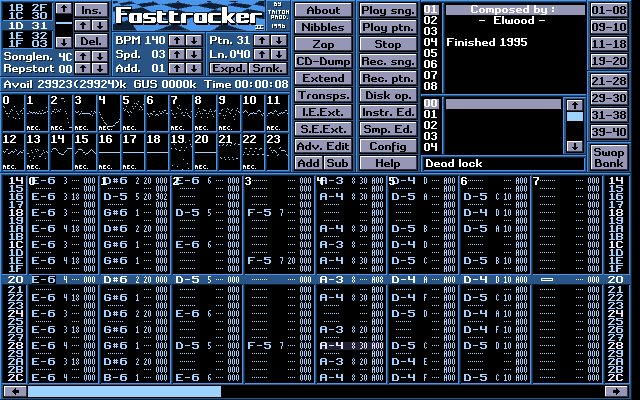

The demoscene is an international computer art subculture focused on producing demos: self-contained, sometimes extremely small, computer programs that produce audiovisual presentations. The purpose of a demo is to show off programming, visual art, and musical skills. Demos and other demoscene productions (graphics, music, videos, games) are shared, voted on and released online at festivals known as demoparties.
The scene started with the home computer revolution of the early 1980s, and the subsequent advent of software cracking. Crackers altered the code of computer games to remove copy protection, claiming credit by adding introduction screens of their own ("cracktros"). They soon started competing for the best visual presentation of these additions. Through the making of intros and stand-alone demos, a new community eventually evolved, independent of the gaming and software sharing scenes.
Demos are informally classified into several categories, mainly of size-restricted intros. The most typical competition categories for intros are the 64k intro and the 4K intro, where the size of the executable file is restricted to 65536 and 4096 bytes, respectively. In other competitions the choice of platform is restricted; only 8-bit computers like the Atari 800 or Commodore 64, or the 16-bit Amiga or Atari ST. Such restrictions provide a challenge for coders, musicians, and graphics artists, to make a device do more than was intended in its original design.
The earliest computer programs that have some resemblance to demos and demo effects can be found among the so-called display hacks. Display hacks predate the demoscene by several decades, with the earliest examples dating back to the early 1950s.
Demos in the demoscene sense began as software crackers' "signatures", that is, crack screens and crack intros attached to software whose copy protection was removed. The first crack screens appeared on the Apple II in the early 1980s, and they were often nothing but plain text screens crediting the cracker or their group. Gradually, these static screens evolved into increasingly impressive-looking introductions containing animated effects and music. Eventually, many cracker groups started to release intro-like programs separately, without being attached to unlicensed software. These programs were initially known by various names, such as letters or messages, but they later came to be known as demos.
In 1980, Atari, Inc. began using a looping demo with visual effects and music to show the features of the Atari 400/800 computers in stores. At the 1985 Consumer Electronics Show, Atari showed a demoscene-style demo for its latest 8-bit computers that alternated between a 3D walking robot and a flying spaceship, each with its own music, and animating larger objects than typically seen on those systems; the two sections were separated by the Atari logo. The program was released to the public. Also in 1985, a large, spinning, checkered ball—casting a translucent shadow—was the signature demo of what the hardware was capable of when Commodore's Amiga was announced.
Simple demo-like music collections were put together on the C64 in 1985 by Charles Deenen, inspired by crack intros, using music taken from games and adding some homemade color graphics. In the following year, the movement now known as the demoscene was born. The Dutch groups 1001 Crew and The Judges, both Commodore 64-based, are often mentioned among the earliest demo groups. While competing with each other in 1986, they both produced pure demos with original graphics and music involving more than just casual work, and used extensive hardware trickery. At the same time demos from others, such as Antony Crowther, had started circulating on Compunet in the United Kingdom.
Although demos are a rather obscure form of art, even in traditionally active demoscene countries, the scene has influenced areas such as computer games industry and new media art.
Many European game programmers, artists, and musicians have come from the demoscene, often cultivating the learned techniques, practices and philosophies in their work. For example, the Finnish company Remedy Entertainment, known for the Max Payne series of games, was founded by the PC group Future Crew, and most of its employees are former or active Finnish demosceners. Sometimes demos even provide direct influence even to game developers that have no demoscene affiliation: for instance, Will Wright names demoscene as a major influence on the Maxis game Spore, which is largely based on procedural content generation. Similarly, at QuakeCon in 2011, John Carmack noted that he "thinks highly" of people who do 64k intros, as an example of artificial limitations encouraging creative programming. Jerry Holkins from Penny Arcade claimed to have an "abiding love" for the demoscene, and noted that it is "stuff worth knowing".
Certain forms of computer art have a strong affiliation with the demoscene. Tracker music, for example, originated in the Amiga game industry but was soon heavily dominated by demoscene musicians; producer Adam Fielding claims to have tracker/demoscene roots. Currently, there is a major tracking scene separate from the actual demoscene. A form of static computer graphics where demosceners have traditionally excelled is pixel art; see artscene for more information on the related subculture. Origins of creative coding tools like Shadertoy and Three.js can be directly traced back to the scene.
Over the years, desktop computer hardware capabilities have improved by orders of magnitude, and so for most programmers, tight hardware restrictions are no longer a common issue. Nevertheless, demosceners continue to study and experiment with creating impressive effects on limited hardware. Since handheld consoles and cellular phones have comparable processing power or capabilities to the desktop platforms of old (such as low resolution screens which require pixel art, or very limited storage and memory for music replay), many demosceners have been able to apply their niche skills to develop games for these platforms, and earn a living doing so. One particular example is Angry Birds, whose lead designer Jaakko Iisalo was an active and well-known demoscener in the 1990s. Unity Technologies is another notable example; its technical leads on iPhone, Android and Nintendo Switch platforms Renaldas Zioma and Erik Hemming are authors of Suicide Barbie demo for the Playstation Portable console, which was released in 2007.
Some attempts have been made to increase the familiarity of demos as an art form. For example, there have been demo shows, demo galleries and demoscene-related books, sometimes even TV programs introducing the subculture and its works.
The museum IT-ceum in Linköping, Sweden, has an exhibition about the demoscene.